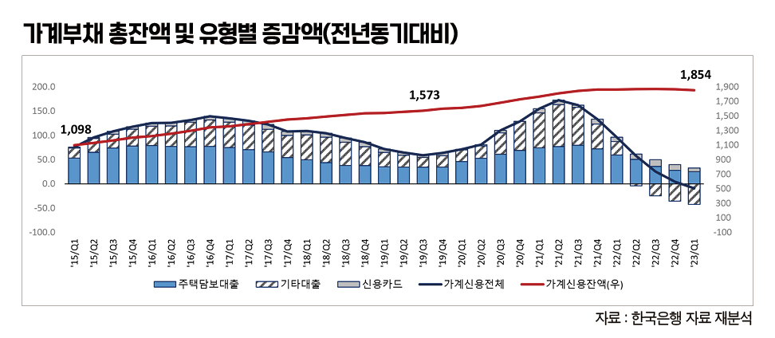
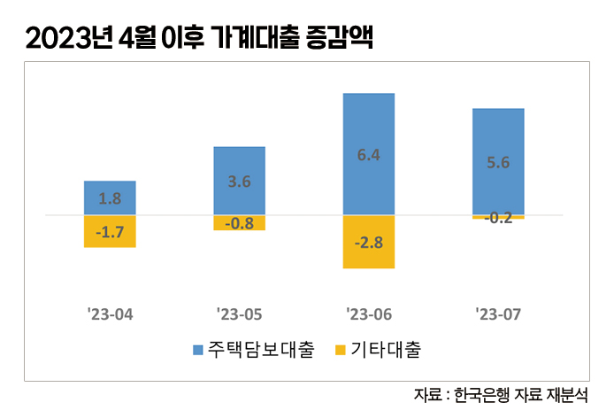

박영삼의 통계로 보는 노동
담보대출 키운 정부와 은행, 고금리 대출로 내몰린 저소득층
가계부채 경고등, 저소득 연체율도 상승 조짐 … 부동산 가격 안정보다 중요한 저소득층 생계, 방향 전환해야
가계부채의 위험신호가 점점 커지고 있다. 정부와 은행이 부동산시장 안정화와 담보물 가치를 떠받치기 위해 주택담보대출을 풀면서 가계부채 총량이 불어나고 있다. 다른 한편에서는 형편이 어려운 저소득층을 중심으로 연체율이 증가하면서 이른바 ‘취약차주’ 문제가 뇌관이 되고 있다.
가계부채 공식통계는 한국은행에서 발표하는 분기별 ‘가계신용’ 통계가 있다. 한국은행의 자금순환표도 가계의 자산과 부채를 집계하지만 여기에는 소규모 개인사업자와 비영리단체가 포함돼 엄격한 의미의 가계부채로는 보기 어렵다. 한은의 가계신용 통계는 은행과 비은행예금취급기관(농수협과 신협·금고 등), 저축은행과 보험사, 공무원연금, 대부업체는 물론 한국장학재단의 등록금과 생활비 대출을 포함한 모든 대출이 포함되고 카드사의 대출과 신용구매까지 포괄한다.
1분기 가계부채 1천854조원 … 4월부터 담보대출 늘어
가장 최근 공식통계는 지난 5월 발표한 2023년 1분기 기준 자료다. 우리나라 가계부채 총액은 1천854조원이다. 이 가운데 주택담보대출이 1천18조원으로 가계대출의 54.9%를 차지한다. 신용대출을 포함한 기타대출이 722조원으로 38.9%를 차지한다. 나머지 114조원(6.2%)이 신용카드를 통한 단기대출과 신용판매다.
2015년 1분기에 1천98조원 규모였던 가계부채는 빚내서 집을 사라고 했던 2015년 1분기 이후 급증했고, 2017년 1분기 이후 2019년 3분기까지 증가폭이 둔화하는 듯했으나 2019년 4분기 이후 이전보다 훨씬 큰 폭으로 급증하면서 집값 폭등 상황을 맞게 됐다. 2021년 3분기 이후 다시 증가폭이 감소하고 있지만 금리 인상과 신용대출 규제로 기타대출은 절대액이 감소하는 반면, 주택담보대출과 신용카드 대출은 여전히 절대 규모가 늘어나는 상황이다.

특히 올해 들어 정부가 공급하기 시작한 특례보금자리론과 은행권의 50년 만기 대출, 인터넷은행의 비대면 대출 등이 총부채상환비율(DSR) 규제를 피할 수 있는 방법으로 등장하면서 가계의 담보대출을 다시 증가시키고 있다.
아직 2분기 통계가 정식으로 발표되지는 않았지만 한국은행의 ‘월별 금융시장 동향’ 보고서와 금융위원회의 ‘월별 가계대출 동향’ 보고서를 통해서 확인되는 것처럼, 4월 이후 지난 7월까지 전체 금융권의 가계부채는 4개월 연속 전월 대비 증가세를 이어가고 있다. 대출 종류별로는 주택담보대출이 4월에 전월 대비 1조8천억원이 늘어난 데 이어 5월에는 3조6천억원, 6월에는 6조4천억원의 증가세를 보였고, 7월에도 5조6천억원이나 증가했다. 기타대출과 2금융권의 대출은 감소했지만 은행권의 주택담보대출 증가(+6조원) 규모가 컸기 때문이다. 이같은 은행권과 정책 모기지에 의한 주택담보대출 증가는 일부 지역의 집값을 다시 상승시키는 요인이 되고 있다.

담보대출에 쏠리는 돈, 저소득층은 중고금리 대출로 몰려
한편 은행들이 담보대출을 늘리고 신용대출을 줄이는 상황에서 저소득층 취약계층들은 2금융권과 카드사의 중고금리 대출에 의존하는 비율이 늘고 있다. 이들에게 주택담보대출은 거리가 멀고 생계비 대출이 더 시급한 상황인데 더 높고 무거운 단기대출 금리로 인해 연체 상황으로 조금씩 내몰리고 있다. 물가 인상과 고용악화로 가처분소득은 줄어들어 악순환이 빚어질 위험이 높다.
지난 5월분까지 집계된 한국은행의 연체율 통계에 따르면 일반은행의 가계대출 연체율은 0.4%이고 신용카드 연체율은 2.7%로 지난해 9월 이후 빠르게 상승하는 추세다. 특히 은행 신용카드 연체율은 2017년 2월 이후 가장 높은 수치다. 국내 전업카드사의 연체율도 치솟고 있다. BC카드를 포함한 8개사의 1개월 이상 연체액은 지난해 1분기 1조2천568억원에서 올해 1분기 1조9천605억원으로 7천37억원 늘었으며 연체율은 0.84%에서 1.23%로 증가했다.

한국은행은 2018년 이후 가계부채DB를 활용해서 다중채무자이면서 저신용(NICE 신용점수 664점 이하)에 하위 30% 저소득 기준에 해당하면 취약차주로 분류한다. 지난 6월 발간한 금융안정 보고서에 따르면 취약차주는 2022년 1분기 6.0%에서 2023년 1분기 6.3%로 상승한 상태다.
‘큰 빚’ 늘리기보다 ‘작은 빚’ 돌보는 정책 펼 때
정부는 가계부채를 걱정하면서도 부동산시장을 위해 가계부채를 늘리는 정책을 취하면서 정작 가장 어려운 처지의 저소득 채무자들의 고통은 제대로 돌보지 않고 있다. 한국의 국가채무 비율은 경제협력개발기구(OECD)에서 가장 낮은 편이고 한국의 가계부채는 가장 높은 나라다. 지금은 정부가 금융정책으로 큰 빚을 권장할 때가 아니라 재정정책으로 작은 빚에 허덕이는 저소득 국민을 돌봐야 할 때이다.
고려대 노동문제연구소 노동데이터센터장 (youngsampk@gmail.com)